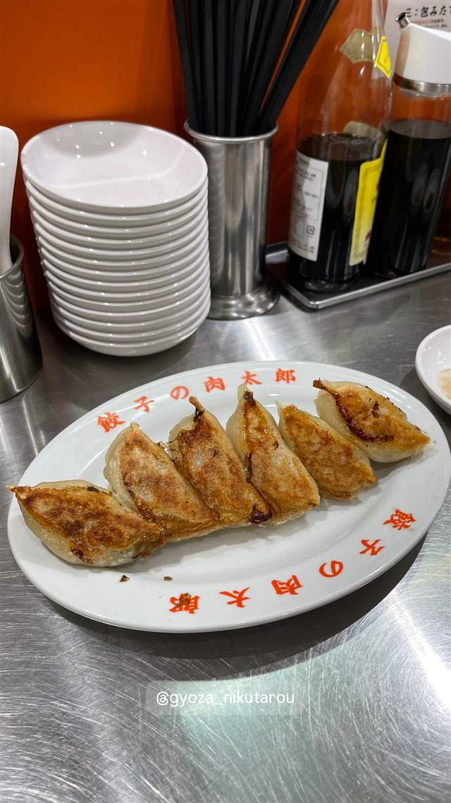

東京ギョーザスタンド ウーロン GREEN SPRINGS店
点心師とシェフが監修、烏龍茶で醸すクラフトビールと餃子
立川ギョーザスタンドウーロン【立川居酒屋/東京餃子】
立川GREEN SPRINGS内にある餃子とクラフトビールの店。ミシュランシェフと中国人点心師が皮から餡まで監修した手包み餃子と、烏龍茶葉で醸造したオリジナルビール「ウーロンエール」が名物。
TRIVIA
へえ、という話
- ビールは中国福建省産の烏龍茶葉を使って醸造したオリジナル「ウーロンエール」
- 東京駅グランスタ内など複数の姉妹店がある
| 創業 | 2022年3月26日オープン |
|---|---|
| 系譜 | 人気クラフトビール店「NIHONBASHI BREWERY」のオーナーが手がける新業態。ミシュラン経験のあるシェフと中国人点心師が餃子を監修 |
| 看板 | 手包み餃子（焼き・水餃子）とオリジナルクラフトビール「ウーロンエール」 |
| こだわり | スペイン産イベリコ豚バラと国産肩ロースの餡を店内で挽き、2種類の小麦粉を独自配合した皮を一枚ずつ手作り。中国福建省産の烏龍茶葉を使って醸造したクラフトビールを合わせる |
| 予算 | 昼 ¥1,000～¥1,999 夜 ¥3,000～¥3,999 |
| 場所 | 立川駅 東京都立川市泉町1091 GREEN SPRINGS内 |
| 注意 | テーブル24席・カウンター28席、GREEN SPRINGS1階に立地 |
食べたもの：餃子
NEARBY
近い店・同じ系統の店
-
 二郎系(インスパイア) 立川南駅
立川 田田
八王子発祥の二郎系の1号支店、自家製麺と豚骨濃厚スープ
昼 ～¥999 夜 ～¥999
二郎系(インスパイア) 立川南駅
立川 田田
八王子発祥の二郎系の1号支店、自家製麺と豚骨濃厚スープ
昼 ～¥999 夜 ～¥999
-
 二郎系(直系) 立川南駅
ラーメン二郎 立川店
「マシマシ」と言わない、立川店だけの独特なコールルール
昼 ¥1,000～¥1,999 夜 ¥1,000～¥1,999
二郎系(直系) 立川南駅
ラーメン二郎 立川店
「マシマシ」と言わない、立川店だけの独特なコールルール
昼 ¥1,000～¥1,999 夜 ¥1,000～¥1,999
-
 餃子専門 三軒茶屋駅
GYOZA SHACK（旧店名 巌）
ガーリック不使用、豚牛鶏羊まで揃う創作餃子のフルコース
夜 ¥3,000～¥3,999
餃子専門 三軒茶屋駅
GYOZA SHACK（旧店名 巌）
ガーリック不使用、豚牛鶏羊まで揃う創作餃子のフルコース
夜 ¥3,000～¥3,999
-
 餃子専門 恵比寿駅
餃子専門 八宝亭 恵比寿店
三田製麺所と同じ会社が作る、一晩寝かせたあんの一口餃子
昼 ¥1,000～¥1,999 夜 ¥2,000～¥2,999
餃子専門 恵比寿駅
餃子専門 八宝亭 恵比寿店
三田製麺所と同じ会社が作る、一晩寝かせたあんの一口餃子
昼 ¥1,000～¥1,999 夜 ¥2,000～¥2,999
-
 餃子専門 明治神宮前駅
原宿餃子樓（原宿餃子楼）
1975年創業、表参道の路地裏で守る340円の餃子
昼 ～¥999 夜 ¥1,000～¥1,999
餃子専門 明治神宮前駅
原宿餃子樓（原宿餃子楼）
1975年創業、表参道の路地裏で守る340円の餃子
昼 ～¥999 夜 ¥1,000～¥1,999
-

餃子専門 神保町駅 餃子の肉太郎 タンタンタイガー創業者が開いた、あんのほとんどが肉の餃子 昼 ¥1,000～¥1,999 夜 ¥1,000～¥1,999